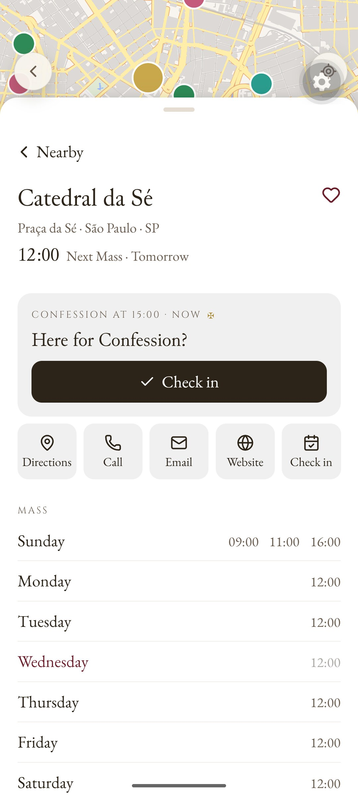
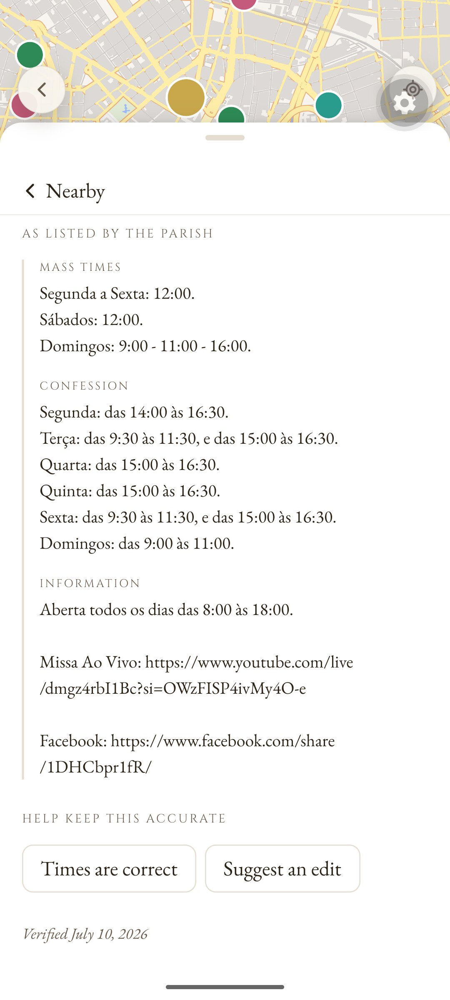

Two separate facts: when a visitor last tapped "Times are correct", and when the times were last corrected from the desk. A visitor's confirmation in the last 60 days counts as fresh; without one, the page says when the times were last checked and that they may be outdated. Drawn over the real Catedral da Sé page (Android, light theme).
Beside the next-Mass line, before anyone reads the times, so trust comes first. Quiet grey; the check is green only while it's fresh.

In "Help keep this accurate", right before "Times are correct", so it reads as an invitation: someone confirmed three days ago, so can you. The bottom caption goes.

The present caption, split in two. The least prominent: only someone who scrolls past the parish's own text sees it.
The same spot when no visitor has confirmed in 60 days. It says when the times were last checked and asks for a confirmation. The tap then turns it back to A.
| State | Line 1 | Line 2 |
|---|---|---|
| Visitor confirmed ≤ 60 days ago | ✓ Confirmed by a visitor 3 days ago | ✎ Corrected October 28, 2026 (if ever corrected) |
| No recent confirmation | ◷ Last checked July 10, 2026 — may be outdated | Been there lately? Confirm the times below. |
| Nothing on record | ◷ Never confirmed — may be outdated | |
| pt-BR | Confirmado por um visitante há 3 dias · Verificado em 10 de julho de 2026 — pode estar desatualizado | Corrigido em 28 de outubro de 2026 · Esteve lá? Confirme os horários abaixo. |